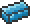

Cobalt Drill
| Cobalt Drill | |
|---|---|
| Statistics | |
| Type | Tool Crafting material |
| Damage | 10 |
| Power | 110% |
| Max stack | 1 |
| Shoot speed | 32 |
| Rarity | 4 |
| Use time | 24 (Fast) |
| Tooltip | Can mine Mythril |
| Sell | 1 |
Cobalt Drill is a pickaxe-type tool crafted using Cobalt Bars and is one of the materials to craft Hamdrax. It is the weakest drill.
Crafting
Recipe
| Crafting Station | ||
|---|---|---|
| Ingredient(s) | Amount | |
|  | Cobalt Bar | 15 |
| Result | ||
| Cobalt Drill | 1 | |
Used in
| Result | Ingredients | Crafting Station | |
|---|---|---|---|
| | Hamdrax | Soul of Fright(5) | |
| Soul of Might(5) | |||
| Soul of Sight(5) | |||
| Adamantite Chainsaw(1) | |||
| Adamantite Drill(1) | |||
| Cobalt Chainsaw(1) | |||
| Cobalt Drill(1) | |||
| Mythril Chainsaw(1) | |||
| Mythril Drill(1) | |||
Notes
- It seems that when held constantly powered for long times it can 'run out of gas' until it is turned on again.
- It's speed is rated the same as the Molten Pickaxe, but it actually digs about 3-4 times faster. Drills may work like a machine gun and trigger several times for each activation.
History
- 1.1: Introduced.
| Pickaxes and Drills |
|---|
| Copper Pickaxe Iron Pickaxe Silver Pickaxe Gold Pickaxe Nightmare Pickaxe Molten Pickaxe Cobalt Drill Mythril Drill Adamantite Drill Hamdrax |
| Cobalt |
|---|
| Cobalt Ore Cobalt Bar Cobalt Brick Cobalt Brick Wall Cobalt Chainsaw Cobalt Drill Cobalt Naginata Cobalt Repeater Cobalt Sword Light Disc Cobalt armor |